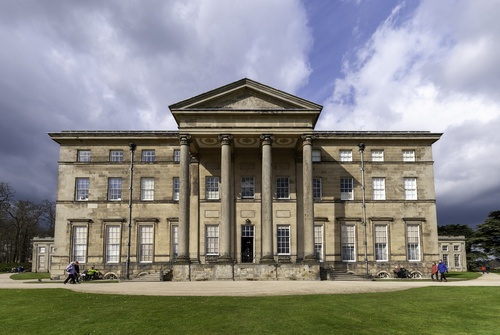

Ashfield Hall, Much Wenlock

Ashfield Hall is an historic house, consisting of two distinct portions. The left-hand side is the original 15th Century structure of coursed stone rubble with stone dressings, and the right-hand of timber frame and plaster was added late in the 16th Century.
The site was originally the site of St John’s hospital, founded in the 13th Century for ‘lost and naked beggars’. The building was occupied in the 15th Century as the private house of the Ashfield family. Later it was called the Blue Bridge Inn from the bridge over a stream that ran in front. Charles I is believed to have stayed here in 1642 on his way from Shrewsbury to Oxford.
Attingham Park
Built from 1772 to 1785 for Noel Hill, 1st Baron Berwick, Hill was the politician who aided William Pitt the younger in the restructuring of the East India Company.
The house was designed by George Steuart and this is the only country house of his design still surviving. At the time, the design was critised for its uncomfortably tall and almost barrack like facade and painfully thin portico columns.
In 1805 John Nash added the picture gallery, constructed using cast iron and curved glass, it was flawed from beginning as it suffered leaks.